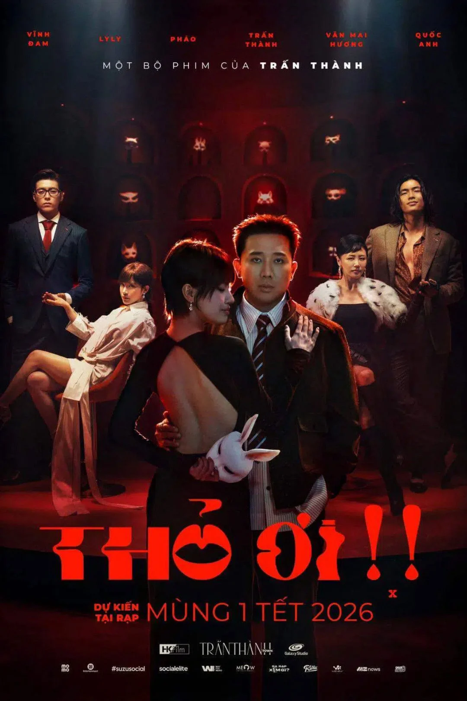
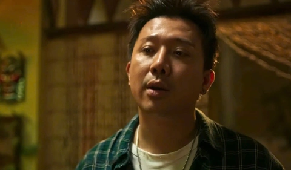

Cốt truyện đầy tính đổi mới về tình yêu của đạo diễn Trấn Thành
Không còn là những ồn ào gia đình quen thuộc, Thỏ Ơi!! đưa khán giả vào một thế giới kịch tính, nơi những góc khuất tâm lý và sự phản bội được bóc tách trần trụi. Phim xoay quanh nhân vật Thỏ (do rapper Pháo thủ vai) – một cô gái trẻ đầy khát vọng nhưng dần sa chân vào những vòng xoáy sở hữu và ghen tuông mù quáng.

Dàn Diễn Viên Chính
Pháo
vai Nhật Hạ (Thỏ)
Cô là người dẫn dắt khán giả đi vào những bí mật đen tối của phim. Nhân vật này đại diện cho sự phản kháng và khao khát thoát khỏi sự kiểm soát.

Trấn Thành
vai Trần Kim
Trần Kim là một người đàn ông thành đạt nhưng có tính cách cực đoan, thích thao túng và kiểm soát người yêu.
LyLy
Vai Hải Linh (Chị Bờ Vai)
Nhân vật này đóng vai trò là "người quan sát", nhưng chính cô cũng đang phải đối diện với sự đổ vỡ và cô đơn trong đời thực.